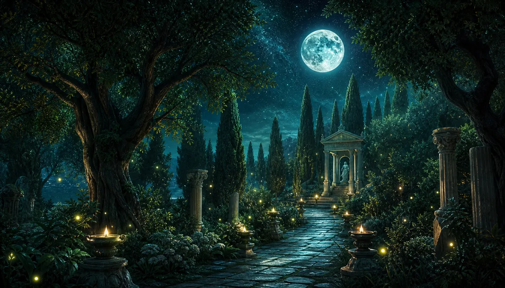
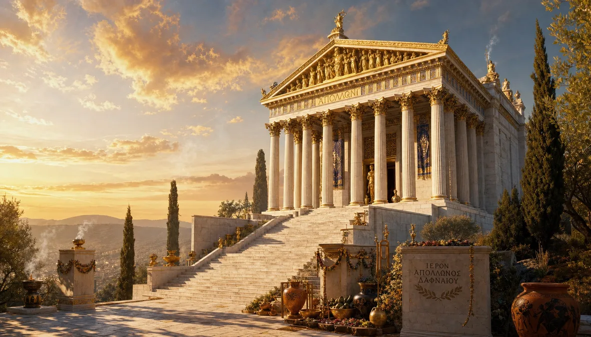
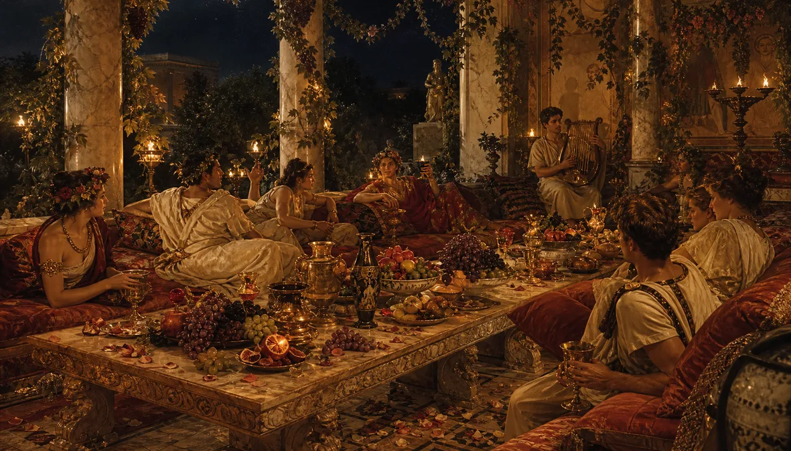
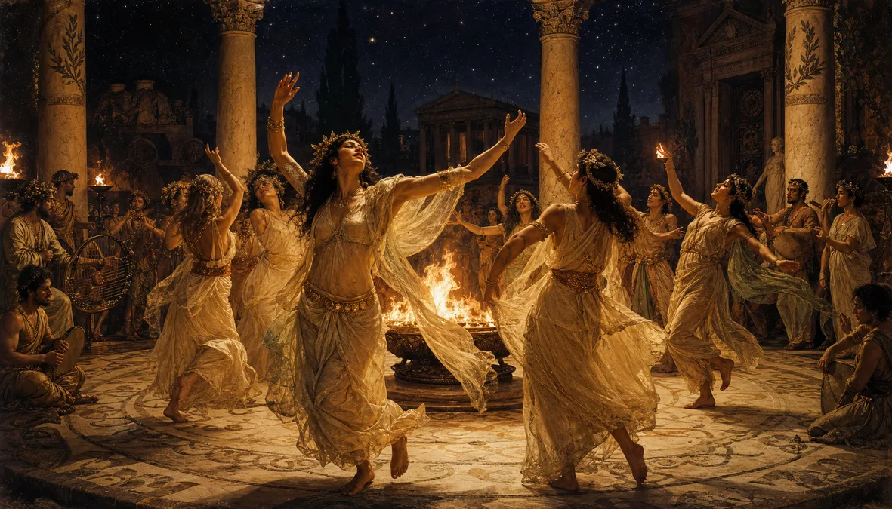
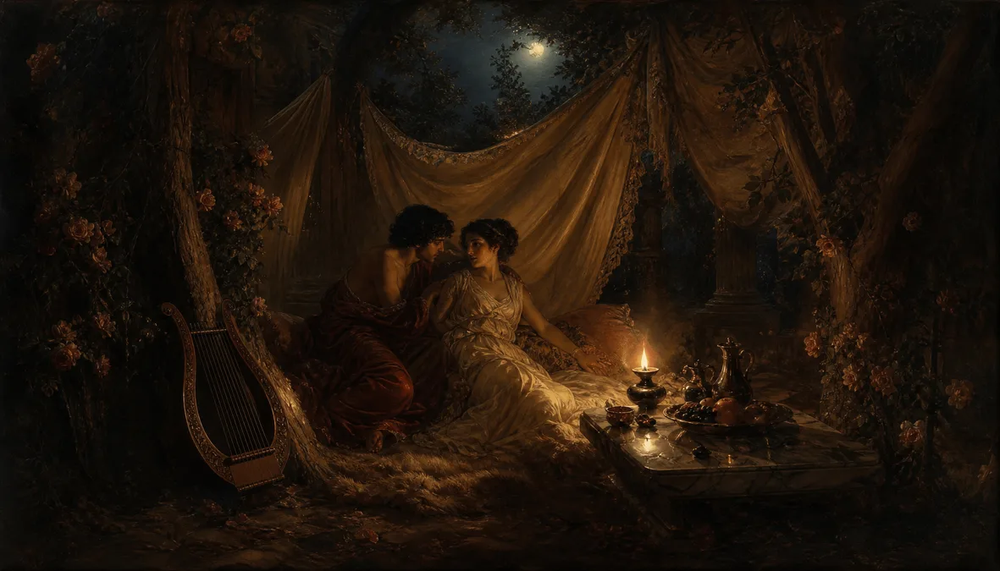

Sex Party in the Grove of Apollo
She ran from the god. She became a tree.
He built a grove. The grove became a party.
The party never stopped.
Apollo wanted her. She said no. He chased. She ran. The river god heard his daughter screaming and turned her into a laurel tree. Apollo stood there, panting, holding bark. He called it love. She called it survival.
He crowned himself with her leaves. He built a temple in her grove. And then the humans came. Not to pray — to do what Apollo couldn't. They came at sunset. They stayed past dawn. They called it worship.
Antioch sent its bishops by day and its lovers by night. And they were the same people.

THE SACRED GROVE — Where the laurels tremble not from wind
"She became a tree to escape a god. Two thousand years later, lovers lie under her branches. She won."
Ten miles from Antioch. Five miles from sanity. The grove of Daphne was the most famous pleasure garden in the ancient world. The laurels grew so thick the sun couldn't enter. Perfect for the things that happened between them. Libanius wrote about it. John Chrysostom preached against it. Julian the Apostate visited and was disgusted. Everyone came back.

THE TEMPLE OF APOLLO — He built a temple for the woman who became a tree to escape him
"He built a temple for the woman who became a tree to escape him. That tells you everything about gods."
Seleucus Nicator built it. The statue of Apollo inside rivalled the one at Olympia. The oracle spoke. The incense burned. And outside, in the grove, the real religion was practiced — skin on skin, wine on lips, the ancient liturgy of bodies that predates every scripture ever written. The temple burned in 362 AD. Julian blamed the Christians. The Christians blamed Julian. The grove kept growing.

THE FEAST — Where the wine never runs out and the night never ends
"The Romans reclined. The Syrians sat. The Greeks argued. Everyone ate. Everyone drank. Everyone forgot their names by midnight."
Long tables under the laurels. Oil lamps in the branches. Wine from Cyprus, figs from Damascus, olives from the valley. The feast at Daphne was not a meal — it was a negotiation between the body and its limits. You arrived a merchant, a soldier, a priest. You left a human being. The couches were arranged in threes — the Roman way. What happened on them was the Syrian way.

THE DANCE — The body speaks the language the mouth cannot
"The body speaks the language the mouth cannot. The dancers at Daphne were the most honest theologians in the ancient world."
The circular courtyard. The bronze brazier. The drummers from Egypt, the flute players from Persia, the lyrists from Greece. When the music started, the robes loosened. Not performance — possession. The dance at Daphne was the oldest prayer: the body asking the body what it wants. And the body answering. Chrysostom called it sin. The dancers called it Tuesday.
THE SPRINGS — The water knew every secret. It never told.
"The water at Daphne was warm. Nobody asked why. Everybody knew."
Natural springs fed pools carved from living rock. The water was said to have prophetic power — drink and see the future. Hadrian sealed the spring with a stone to stop the oracles. The water found another way. It always does. At night, the pools reflected the torches and the skin and the laurel and the everything. The philosopher Libanius described the springs as the place where nature and humanity stopped pretending they were different things.

THE ALCOVES — Silk, shadow, wine, and the rest is between you and the laurels
"Behind the silk. Past the last lamp. Where the only witness is the tree that was once a woman who said no."
Silk curtains between the ancient trunks. A single oil lamp. Wine. Cushions. And the understanding that what happens in the grove stays in the grove — a rule older than Vegas by two millennia. The alcoves at Daphne were where generals planned empires, where poets wrote their best lines, where marriages were betrayed and remade in the same breath. The laurel tree watched. She had seen worse. She had been worse.
"Under the full moon, the grove dropped its last pretence. Everyone was beautiful. Everyone was hungry. Everyone was honest."
The central clearing where the grove opened to the sky. On full moon nights, the Daphne Festival — the one the historians only mention in footnotes. No torches needed. The moon lit everything. The dancers danced. The lovers loved. The wine flowed. And somewhere, in the rustle of ten thousand laurel leaves, Daphne herself — the original woman who said no — watched and thought: they turned my suffering into a party. And somehow that is the most human thing of all.
"Frankincense from Arabia. Myrrh from Ethiopia. And something else. Nobody named it. Everybody inhaled."
Braziers on stone pedestals between the paths. The smoke mixed with the laurel scent and the night air and created what the ancients called the Breath of Daphne — the atmosphere that made everything possible. The incense gardens were the transition zone. You walked in from the road, a citizen with responsibilities. By the time you reached the clearing, the smoke had taken them all. You were nobody. You were everybody. You were free.
"The walk home was ten miles. Every step, you remembered. Every step, you forgot. By the time you reached Antioch, you were someone else."
The stone road back to Antioch. Ten miles of olive trees and regret and satisfaction and silence. The dawn path was where the party ended and the life resumed. Some walked fast, ashamed. Some walked slow, savouring. Some never walked back at all — they stayed in the grove, became part of it, tended the lamps, poured the wine, became the priests of the oldest religion: the religion of the body in the garden under the moon.
She said no. He chased. She became a tree. He built a grove.
The humans came. They did what the god couldn't.
They asked first.
That is the only difference between a god and a lover.
The lover asks.
The grove of Daphne. Where the party never stopped.
Where the laurels tremble not from wind.
Where the body is the only honest scripture.
Still there. Still warm. Still free.